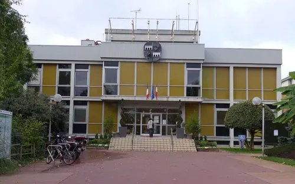

Experiences
4 stages en entreprise et etablissements depuis 2023.
Lycee Polyvalent de Cachan · Cachan (94)
Stage au service informatique de l'etablissement. Support utilisateurs, maintenance des postes et mise en place d'infrastructure serveur.
- Assistance aux utilisateurs pour la resolution des problemes informatiques
- Configuration et maintenance des postes de travail
- Creation et configuration d'un serveur
- Mise en place d'un serveur de temps (NTP)
Merlin Informatique · 1 Rue Michel Jeunet, Poissy (78)
Stage au sein d'une societe de services informatiques. Gestion du support en autonomie avec suivi rigoureux des incidents.
- Assistance aux utilisateurs pour resoudre les problemes techniques
- Gestion des tickets d'incidents et suivi des demandes d'assistance
INA (Institut National de l'Audiovisuel) · Val-de-Marne (94)
Stage reseau dans l'institution de conservation du patrimoine audiovisuel francais. Environnement haute disponibilite.
- Configuration de modules 40G sur equipements Palo Alto Networks (NGFW)
- Installation et mise en service de serveurs physiques

Mairie d'Arcueil · Avenue Paul Doumer, Arcueil (94)
Premier stage en collectivite territoriale. Prise en charge autonome des interventions et mise en place de processus ITSM.
- Deploiement de postes de travail et mises a jour logicielles
- Mise en place d'un systeme de gestion des tickets
- Maintenance preventive du parc informatique municipal